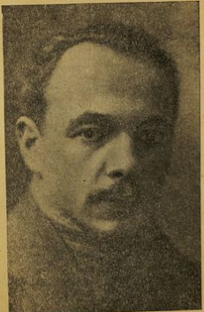
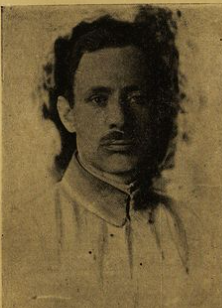

Писатель, написавший "На заре красного террора"
— Григорий Яковлевич, я хотел спросить вас, какие у вас остались воспоминания о большевиках во время февральских дней?
— В марте месяце мне пришлось быть на Всероссийском совещании Советов. И там я убедился, что явление, которое мне пришлось наблюдать в Витебске, отсутствие большевиков или отсутствие лица у тех большевиков, какие еще где-то когда-то существовали, это явление почти всероссийского порядка.
— А вы, простите, вы поехали как делегат на этот съезд?
— Я был делегатом Всероссийского совещания Советов от Витебска.
— А Витебске вы были председателем Совета рабочих депутатов?
— Да. И вот в те дни, когда происходило совещание Советов, состоялась первая конференция большевиков, когда прибыли из ссылки Каменев и Сталин, взявшие в свои руки руководство правдой. И когда Шляпников, в сущности единственный законный представитель Ленина в Петербурге, должен был отступить в тень и уступить им место официальных представителей. И в это время обнаружилось, что политическая физиономия лидеров большевизма чрезвычайно близка к позиции меньшевиков. Даже не левого толка, потому что лидер интернационалистов Мартов ещё не приехал, он прибыл только в июне. А что касается Дана, который лидировал, то он был лидером фракции оборонцев. На совещании большевиков выяснилось, что не только по основным вопросам, они очень близки к меньшевикам, то есть по вопросу о войне и по вопросу о временном правительстве, И Сталин, и Каменев заявили, что они считают, что Россия переживает период буржуазно-демократической революции, которая не требует никакого противодействия, как было формально сказано в их резолюциях, временному правительству, состоявшему из представителей буржуазно-демократических слоёв, кадетов, трудовиков, народных социалистов, но не сторонников максималистских каких бы то ни было лозунгов. лозунгов. Такого же рода заявления были сделаны и Сталином, и Каменевым по вопросу о войне. Если Германия будет продолжать наступать, то русская армия, защищая революцию, должна дать им отпор. Это была официальная позиция. Достаточно вспомнить, что большевики, бывшие на Всероссийском совещании, голосовали за резолюцию, предложенную данным. Эти явления нужно расширить. В период сталинизма и после Сталина властители современной России не склонны заниматься историей февральской революции и не склонны освещать положение, царившее большевистской партией. На самом деле процесс объединения большевиков с меньшевиками, тяга большевиков к такому объединению была всероссийским явлением. Не меньше 20-30 крупнейших организаций, такие с февральской революции вышли на поверхность, объединялись с меньшевиками или ставили перед собой эту задачу. Никакого специфического лица у большевизма в этот период не было. Маленькая иллюстрация. Петербургский комитет большевиков решил выпустить книжку популярную об учредительном собрании. И так как новой брошюры в их распоряжении не было, они выпустили брошюру, изданную в период Первой революции и написанную ФД, то есть Фёдором Даном. И сами они выпустили её не то 10 тысяч экземпляров, не то 100 тысяч экземпляров. Приезд Ленина изменил обстановку в центрах партии. Мои провинциальные впечатления, к которым я хочу вернуться, они с большей яркостью еще свидетельствуют о полном отсутствии, если так можно выразиться, всякого присутствия большевиков в февральской революции. В Витебске в апреле появился первый большевик. Никакого общественного значения его участия в рабочем движении и в совете, куда ему были открыты все двери, приглашали его очень охотно, но ничего это не внесло. Он оказался, хотя и довольно симпатичным, и довольно интеллигентным человеком, но косноязычным, плохим оратором и был в чрезвычайно растерянном состоянии вследствие своей полной изоляции. С течением времени он завязал некоторые связи в латышском клубе беженцев. У латышей всегда было, можно сказать, 50-50. Половина меньшевиков, половина большевиков. Официально латыши входили в федеративный комитет вместе с меньшевиками и бунтом. Вероятно, большинство принадлежало к меньшевикам. Но была группа, которая чувствовала себя связанной с большевиками. Постепенно благодаря связям с латышами им удалось завязать связи в гарнизоне кто такие эти таинственные незнакомцы были из гарнизона мне хотя и стоявшему в центре советской дел всех установить не удалось.
— А вы не помните фамилию этого большевика из Витебска? Просто так, может, интересно для истории.
— Пинсон.

— Пинсон Борис.
— Он приехал из ссылки.
Вот я хочу рассказать, что в 1923 году уже после победы большевиков повсюду местный Спарт выпустил книгу
«Красная быль.
Большевики в Витебске»
, где Пинсон является историком февральской революции в Витебске, а все остальные
приехали, авторы и сотрудники этой книги, по большей части это люди, которые февральский период
революции не
проводили в Витебске, которые частью были привезены из фронта, это были солдаты и офицеры, за братания и
прочее, арестованные на фронте и посаженные в Витебскую тюрьму, и выпущенные по ходатайству
Меньшевистского
эсеровского совета, неизвестно зачем, выпущенные до октября.
Из них я помню только фамилию Крылова, поручика, который был потом военным комиссаром после победы
большевиков.

Во время выборов в городскую думу, это было 30 августа, в первый день Корниловского движения, восстания.
И им удалось, по-видимому, голосами солдат и отчасти латышских беженцев провести значительную группу
гласных.
Они провели 16 или 17 человек.
— Из какого количества?
— Из количества 102 гласных. Но так как социалистический блок, значит, Меньшевиков, Серов, Бунда и прочие провёл 38 голосов, то это была весьма большая победа большевистски настроенных солдат и латышей. Но надо сказать, что в своей декларации они себя не называли большевиками, а называли себя интернационалистами. Не меньшевиками-интернационалистами. Они ничего общего с меньшевиками не имели. Они были противниками меньшевиков, но называли они себя не большевиками, а интернационалистами. И вот, в частности, в рассказе Пинсона о февральской революции совершенно откровенно устанавливается то, чего я не знал, находясь в Витебске. что большевистская организация создалась в Витебске только 1 октября. То есть, что на том собрании, на которое было создано 1 октября, было постановлено связаться с большевистским центром и переименовать себя в большевиков. Таким образом, моя мысль о том, что большевиков в городе не было, она даже и с формальной стороны подтверждается. И это неудивительно. Пинсон, рассказывая об отношении к большевизму в Витебске в начале февральской революции, пишет, что рабочие солдаты-крестьяне, а потом в кавычках, считали большевиков за немецких шпионов, а в лучшем случае за отпетых политических авантюристов, способных погубить русскую революцию, ввергнуть массы в омут нищеты, безграничной анархии и прочих ужасов. Кавычки закрываются.
— И это вы цитировали из «Красной были».
— Я цитирую статью Пинсона из «Красной были».
Были в февральские революции.
Неудивительно, что никто не хотел ходить к большевикам, даже если и был максималистский настрой.
Октябрьский переворот, как известно, произошел в Петербурге.
Затем бои были в Москве.
В Витебске была тишь и гладь, и полная растерянность тех немногих большевиков, которые уже к этому
времени
оказались в наличности под псевдонимами или под своим настоящим политическим ярлыком.
Но после октября несколько человек из центра были присланы в Витебск для того, чтобы обеспечить
господство
правящей партии захватившей власть также и в западной нашей провинции.
Среди них был один старый большевик Бреслав, кличка его была Захар.

Он был в 1911-1912 году одним из немногих агентов Ленина в большевистском подполье, объезжавщим Россию.
Бреслов был тогда арестован, сослан и прочее.
Бреслов одно время был торгпредом в Париже, но большой политической карьеры у большевиков он не сделал, несмотря на то, что он был очень интеллигентный рабочий по профессии первоначальный сапожник. Бреслов, написавший статью о том, что он застал в Витебске, когда приехал по поручению Центрального комитета наводить большевистские порядки, писал что связи с местными рабочими, их организациями и местной экономической, общественной и даже политической жизнью не было у Совета солдатских депутатов, который большевикам удалось создать. Рабочий совет оказался для них недоступен. Ни у партийной организации, ни у тех двух сил, на которые и совет солдатский, и партия опирались в то время. Солдаты и латыши.
— А, простите, где это он писал?
— Он писал в том же сборнике «Красная быль». Меньшевики и эсеры, продолжает он, имели бесспорное и неограниченное влияние на всю рабочую массу. Профсоюзы были меньшевистско-эсеровские. Выступать на рабочих собраниях и в профсоюзах было чрезвычайно трудно даже мне, а он был местным уроженцем. Вот что писал Борислов о положении, которое он создал после Октябрьского переворота в Витебске. Совет рабочих депутатов писал другой присланный из центра большевик Иван Меницкий. Сообщает, совет рабочих депутатов оставался цитаделью меньшевиков и эсеров. И я должен прибавить в качестве бывшего председателя Совета, что я оставался председателем Совета рабочих депутатов и Совета профессиональных союзов до 10 января 1918 года. И большевики не решались делать какие бы то ни было покушения или аресты в нашей среде для того, чтобы сорвать наше, так сказать, господство в этих организациях. Не буду распространяться больше о витебских большевиках, но должен остановить внимание слушателей на эпизоде, связанном с таким громким именем, как Николай Иванович Ежов, который сыграл такую роковую роль и который дал свое имя целой полосе сталинского управления, Ежовщине. Из краткого курса ВКП, который как будто бы составлен самим Сталином или вышел под его редакции, сказано, что на Западном фронте в Белоруссии подготовлял к восстанию, речь идёт об Октябрьском перевороте, товарищ Ежов. В небольшой книжке, написанной примерно в то же время, значит, в 1938, издана в 1939, Я в 1938 году историком И. Минцем О Великой социалистической революции в СССР более подробно говорится о Ежове и его деятельности в период февральской революции в Витебске. Оказывается, что Ежов, бывший путиловский рабочий, был за выступление против администрации завода арестован, а потом сослан, бежал и сдан в армию.
И оказался в Витебске в запасном батальоне, где, по-видимому, он и провёл эту февральскую революцию. Ну и по рассказу этого советского сталинского историка, он выдвинулся в период создания военно-революционного комитета большевиков в Витебске. Это примерно в ноябре 1917 года. Должен сказать, что никогда я не только не встречал Ежова, не только не был он в составе Совета рабочих депутатов, или в совместных заседаниях, которые бывали у нас с Советом солдатских депутатов, в президиуме, или в исполнительном комитете, или на общих собраниях, никогда человек по фамилии Ежов ни разу в Витебске не выступал. И вообще я склонен думать, что история с Ежовым представляет собой легенду, созданную Сталиным в тот период, когда он должен был искусственно создать партийный и революционный стаж тем деятелям, которых он выдвинул в качестве своих помощников. Ибо, насколько мне известно, ни Каганович, ни Жданов, ни Маленков, ни Ежов никогда никакого отношения нигде не имели к событиям периода Февральской революции или начала октября.
— То же самое и о Хрущеве можно сказать?
— Я не сказал бы это. Поэтому я и не назвал его именем. Молотов, Ворошилов были большевиками из сталинского окружения. Калинин – это были большевики. Микаян, Булганин это были чекисты начавшие свою карьеру один на в Баку а другой в Нижнем Новгороде чекистскую именно карьера а потом превратившие ее довольно удачно в политическое так как продвижение но что касается его то я думаю что это все легенда сочиненная в недрах секретариата Сталина ну для тех целей какие ему были тогда нужны. Из книги, изданной большевиками в Витебске, Витебской революции, так сказать, У меня получилось впечатление, что они сами, может быть, из лучших побуждений партийного самообольщения и партийного патриотизма, дали достаточно материала для того, чтобы подтвердить моё положение, что никаких большевиков в Витебске не было.
И что в лучшем случае в тех элементах, которые были максималистски настроены, а такие элементы и среди солдат, и среди рабочих были, что они не шли за большевиками примерно до весны 1920 года, насколько я мог поддерживать на связи свои с витебским движением и с витебскими, так сказать, делами. Только к весне 1920 года, когда уже все более или менее активные общественные элементы были изъяты и арестованы или ликвидированы, Только тогда большевикам удалось начать свои первые завоевания как в рабочей среде, так и в среде старых социалистических партий, которые ходом событий коммунизировались и переходили на сторону победителей. Могу сказать, что у меня лично был приятель, один сапожник, которого я знал с 1907 года в Бунде. И когда при случайной встрече в эти годы мне сказал, ничего не могу поделать, я с каждым месяцем катастрофически левею. Он был человек семейный, ему предлагали должность председателя рабочего кооператива, А он был бедный сапожник, работавший в небольшой артели и не зарабатывавший достаточно для пропитания. Политической деятельности для него уже больше не было. И он сдался, насколько я знаю. Капитулировал.
И теперь я хотел бы перейти. К вопросу о том, как отчасти на моих глазах происходила деформация русского большевизма. Если вспомнить ту характеристику состояния большевистской партии, о которой я отчасти со слов Шляпникова, отчасти по материалам, собранным Троцким в его истории февральской революции, я пытался воссоздать. Мне кажется, надо исходить из того положения, что приезд Ленина сыграл решающую роль. Я принадлежу к тем скептикам, которые склонны думать, что без поддержки немецкого генерального штаба и кайзеровской Германии, без денежной поддержки этого захвата Лениным большевистской партии не могло бы быть даже. Но об этом тогда самые большие противники большевиков не думали и эту мысль не могли усвоить. И решительно отвергали его от Церетели до Короленко, до в сущности временного правительства, которое в южские дни, хотя и имело уже какие-то данные для предъявления обвинений Ленину в том, что он создавал движение своё на немецкие деньги, И, по-видимому, не хватило ни мужества, ни решительности, ни характера, как не хватило этого характера во многих других случаях. И поэтому не было сделано попытки подавить подымающий голову большевизм в самом корне. Но мне пришлось быть свидетелем того, как Ленин начал завоевывать большевиков.
Вот случайно, будучи тогда делегатом на Всероссийском совещании советов, с одной стороны, затем будучи участником конференции Бунда, Я узнал, как узнал весь Петербург, что накануне ночью приехал Ленин и в течение всей ночи произносил свои речи о грядущей и близкой социалистической революции. и обещая "мир хижинам и войну дворцам", что я узнал, что Ленин будет выступать среди делегатов Всероссийского совещания меньшевиков и большевиков. И направился в Таврический дворец на машине вместе с Эрлихом, видным деятелем Бунда, и пресловутым впоследствии Заславским, переметнувшимся в лагерь коммунизма, после того, как он обвинял Ленина и Зиновьева и всех прочих не только в государственной измене, но и в том, что они продажные агенты Германии. Тогда Заславский был в других политических настроениях и ещё не докатился до этого позорного своего состояния. И мы приехали на собрание, в котором было тысячи людей, вероятно, это была просто большая публика, кроме делегатов, многие, вероятно, присутствовали. И там Ленин выступил с теми тезисами, которые получили потом название апрельских тезисов и легли, так сказать, в основу новой ориентации русского большевизма. Я не могу, конечно, характеризовать сейчас воззрение Ленина или призывы Ленина того времени. Они были развитием тех его лозунгов, с которыми он накануне ночью перед матросской и солдатской аудиторией выступал. Кроме призывов к прекращению войны, гражданской войне в сущности в стране и к свержению временного правительства, это звучало немного более глухо в этих тезисах, потому что во временном правительстве были самые популярные люди России, и в апреле месяце ещё нелегко было выступать против них.Но он также выступил с идеей о том, что надо создать новую партию, которая выбросит социал-демократическую свою программу как грязное бельё и назовёт себя партией коммунистической. Мои личные впечатления от Ленина были довольно неожиданны. Он, во-первых, оказался не идеологом, даже не политиком, а демагогом, калькулятором довольно примитивного свойства. и по внешности своей, и по внутреннему содержанию несравнимым. Не только не с Плехановым или с кем-нибудь другим из выдающихся русских социалистов, но ни в какой мере не казался он наследником Чернишевского, Лаврова, Михайловского, то есть всех предшественников революционного движения в России. Алданов, довольно известный исторический романист и историк, Однажды говоря о русской революции, я отметил, что если история – это в сущности история книг, то надо сказать, что русская революция большевистская, в большевистской своей стадии, теперь, это можно сказать, почти за 50 лет, не отметил себя изданием хотя бы одной серьёзной книги. Впрочем, он сделал оговорку. Он сказал, что книжка Ленина, написанная в сентябре 1917 года, удержат ли большевики государственную власть в России. Это является исключением. Может быть, это единственная замечательная книга, которую выпустили большевики. Не только потому, что она оправдалась, они удержали эту власть, но и потому, что в ней есть предчувствие, Пафос, даже уверенность, даже профетизм известный.
И вот эти черты Ленина в сущности уже бросились в глаза тогда, когда он впервые выступал перед довольно обширной социалистической и советской аудиторией 4 апреля 1917 года. Это было несколько примитивно. Это в речи его преобладала домогогия, которая получала такое выражение. Если он произносил фразу, которая вызывала разгул страстей, и огромное собрание делилось на два лагеря, из которых один лагерь неистовствовал от негодования, а другой бушевал в каком-то смысле охваченный восторгом, то это и были те элементы и тот метод демагогии, которым прибегал Ленин. Повторяю, он оказался плохим оратором, чего я не ожидал от него. Он читал без подъёма и без всякого выражения тезисы, написанные на бумажке. В промежутке между фразами попивал чаёк и грыз кусочек сахара. А когда он вызывал бурю своим выступлением, прочитанным тезисом, то он выжидал, пока буря уляжется, но не для того, чтобы успокоить страсти и апеллировать к разуму собрания, а напротив, он повторял этот самый тезис для того, чтобы вновь возбуждать эти страсти и эту бурю. Против него выступили, как известно, Каменев и от большинства Центрального комитета, несколько ораторов очень удачных сделали свои критические замечания по поводу того, что Ленин проповедовал. Каменев сказал, что он обеззён, что по бывшей три дня в России и познакомившись с обстановкой, Ленин поймёт всю ошибочность своей позиции.
Мешковский, бывший большевик, заявил, что трон Бакунина, который не был замещен в течение 30 лет, наконец нашел в лице Ленина своего достойного заместителя. «В вашей новизне старина слышится», – сказал он Ленину. Только Калантай, бывшая меньшевичка, которая примкнула в 1915 году к Ленину за границей, Калантай его поддержала. Но ни Сталин, ни Рыков, никто другой из большевиков его не поддержал.— А какая была Ваша непосредственная реакция на эти тезисы, когда Вы были на этом совещании и слушали Ленина?
— Я, к сожалению, принадлежал к тем недальновидным людям, которые даже и не подумали о том, что Ленин может выполнять поручение немецкого генерального штаба по разрушению Восточного фронта, по деморализации русской армии и не предполагал, чтобы в стране, о которой Ленин уже за границей писал, существует такая политическая свобода, которой нет нигде в мире, что он позволил себе поставить задачу захвата власти ничтожным меньшинством стран. И поэтому я, конечно, считал, что это бред, как писал Плеханов, что это безумие, но дальше этого, конечно, не пошел. Я в известном смысле, у меня было личное разочарование от Ленина, потому что я представлял себе, что Ленин при всем своем максимализме является законным сыном всего русского революционного движения, в частности народной воли и даже, если хотите, Бакунина. Но примитивный характер, убогий характер или духовный уровень его выступления меня просто поразил. И я был более высокого мнения о Ленине как о писателе, как о руководителе, как о политическом вожде, чем я это получил от его выступления.
— Я думаю, что этого достаточно для передачи моего впечатления от Ленина. А сейчас я хотел вернуться к вопросу о лете 1917 года. У вас в ваших воспоминаниях очень интересно описана встреча с генералом Алексеевым, как раз в те дни, когда начиналось Корниловское выступление, Корниловские дни. Может, вы были бы любезны и рассказали об этом?
— Конечно. Я был на Московском государственном совещании делегатом от Витебской городской думы. Впечатления, вынесенные мною от этого священия, были ужасны. Во-первых, уже по пути я встречал при пересадках, при хождении по железной дороге, по вагонам, я встречал, я сказал бы, верхушечные элементы русского офицерства, ехавшие в одном направлении со мною, с запада, с фронта, с тыла, в Москву, и убедился, что многие верхушечные элементы офицерства, георгиевские кавалеры, которые ездили отдельным вагоном, И другие были совершенно враждебно настроены по отношению к тому, что называлось делегаты советских или городских, или земских даже представителей того времени. они не скрывали, как я воспринимал тогда, своих контрреволюционных настроений. То есть настроений нет столько разочарования во временном правительстве и его политике, но враждебности к временному правительству и Керенщине. Этот термин уже тогда существовал. Керенщина был символ слабости, бессилия, бесхарактерности и, следовательно, символ отсутствия всякого влияния на ход событий. В вопросах ли внутренней, в вопросах ли внешней политики. Второе впечатление было от почти всеобщей забастовки рабочих, которую удалось большевикам организовать против государственного совещания. Даже трамвай не шли, и нам, делегатам, пришлось добираться до Воскресенской площади, где была городская дума, пешком. Третье впечатление было ещё ужаснее всех остальных, потому что мы почувствовали, что за спиной государственного освящения организуется довольно сильное движение, направленное против временного правительства.
Съезд общественных деятелей, возглавлявшийся Струве и Меликова, а также крупными землевладельцами и представителями двоянства, впервые пытавшегося сказать своё слово в условиях Новой России. Они ждали с нетерпением приезда генерала Корнилова для того, чтобы явно демонстрировать свое настроение, активно направленное против февральской революции. Идеал Корнилова, окруженный большой и торжественной свитой, по приезде в Москву совершил моление у часовни Иверской. У Иверской часовни, надо сказать. И оттуда направился в Большой театр, где шла одна из импозантных сцен февральской революции. И там вместе с другими генералами, с Калединым и Алексеевым, предъявил ультиматум. И сказал все, что у него на душе против временного правительства, против царившего двоевластия, против фактического влияния советов, рабочих и солдатских депутатов на ход вещи. Следующее. Парад генералов, как мы говорили в своей среде, произвёл самое удручающее впечатление. Тем более, что он был поддержан выступлениями разных политических деятелей, которых было немало на московском совещании и которые представляли самые неожиданные организации. Ну, не только биржевые комитеты, но и, скажем, от Витебска союз белорусов, фактически представлявших собой бывших членов союза русского народа. В. Путин – Разочарование во временном правительстве в середине августа месяца уже достигло своего апогея. Апогея.
Выступления Керенского и других министров подчеркивали тот тупик, в котором оказалась февральская революция. И попытка Церетели выступить с декларацией, которая была одобрена, вероятно, большинством собрания, она не внушала достаточного доверия. Я говорил это к тому, что возвращаясь в провинцию и выступая с отчетом о своих впечатлениях о Московском государственном совещании, я не скрыл своего мнения о том, что в ближайшей стадии надо ожидать какого-нибудь сюрприза не слева, а справа. События, как известно, не дали себя долго ждать, и в самом конце августа неожиданно для всех открылась глава мятежа Корнилова. Мы в провинции должны были делать своё дело. И делали попытки мобилизации разных военных частей на тот случай, если бы Корнилов из Ставки или даже из фронта направил войска на Петроград против Временного правительства и против Совета рабочих депутатов. Мы были в контакте с Петербургом, с Петроградом и выдвинули в качестве объединяющего лозунга поддержку временного правительства. Несмотря на то, что у нас самих было достаточно оснований для критики Временного правительства. Совет рабочих и солдатских депутатов выделил из себя военное бюро из семи человек, куда вошли все лидеры социалистических партий. И от имени всех было послано нами обращение к Временному правительству. Копии были посланы руководителям Совета, в частности Церетели и Чернову, которые входили тогда в состав правительства. о том, что вот мы готовы помочь чем только можем для того, чтобы отбить этот удар, нанесенный генералом Корниловым. В это время телеграммы сообщили о том, что генерал Алексеев назначен начальником штаба Верховного главнокомандующего, а верховным главнокомандующим был к этому времени уже Керенский, занимавший посты и председателя правительства, и военного министра.
Мы послали тогда немедленно телеграмму, в которой формулировали свое мнение о том, что генерал Алексеев человек, принадлежащий к лагерю генерала Корнилова, и поэтому он не должен занимать того места, какое временное правительство ему предоставило, и что это представляет собой опасность для дальнейшего хода революции. В это время мы получили телеграмму о том, что генерал Алексеев выезжает в Ставку для того, чтобы урегулировать мятеж Корнилова. В час ночи, сидя на вокзале у прямого провода и интересуясь каждой деталью, связанной с возникшим политическим конфликтом, мы узнали, что в скором времени прибудет поезд на станции Витебск, в котором едет генерал Алексеев, направляясь в Могилев, в Ставку. Тогда мы приняли решение повидать генерала Алексеева и, во-первых, рассказать ему о наших всякого рода военных и стратегических предприятиях и поставить судьбу их в зависимости от его указаний как начальника штаба Верховного Главнокомандующего. С другой стороны, мы решили, что мы обязаны, как местные деятели, сообщить ему о нашем отношении к методам ликвидации мятежа генерала Канилова. Мы считали, что никакого сговора с ним не должно быть, что он должен быть предан суду за устроенный, за организованный мятеж, который потряс все основы февральской революции. В 2 часа ночи прибыл поезд генерала Алексеева.
— А вы не помните, приблизительно, какого числа это было?
— Я считаю, что это было 30 августа. От имени военного бюро советов для встречи генерала Алексеева был избран Тарле и я. Оба председателей совета рабочих и солдатских депутатов. Мы вышли на платформу на встречу поезда генерала Алексеева и нас встретили. И сопровождавшие его лица это был Вырубов и Филоненко, которые занимали крупные посты при верховном главнокомандующем. Кажется, один заведовал гражданской частью, а другой был официальным юристом. Филоненко был адвокатом. И хотели у нас узнать, зачем нам нужно видеть генерала Алексеева, уже немолодого человека и в такой поздний час. Мы уклонились от беседы с ними и настаивали на том, чтобы повидать генерала Алексеева лично. что у нас есть срочное дело к нему. Действительно, у нас было срочное дело. Перед самым выходом на платформу для встречи поезда генерала Алексеева мы получили по прямому проводу, вернее, перехватили текст телеграммы, адресованный Керенским полковнику Короткову в Оршу. в котором было совершенно ясно и недвусмысленно сказано, что полковник Коротков должен собрать кулак в Орше и немедленно двинуться в Могилёв. С тем, чтобы ликвидировать мятеж и арестовать генерала Корнилова и его сторонников. Мы имели основание, я сказал бы, политическое основание считать, что генерал Алексеев не осведомлен об этом новом стратегическом шаге, предпринятом премьером или верховным главнокомандующим в Петрограде уже после отъезда генерала Алексеева. И обязательно, помимо желания высказать ему наши политические соображения, мы считали, что мы обязаны, перехваченный эту телефонограмму, сообщить генералу Алексееву. Вот между двумя и тремя часами ночи к нам вышел заспанный генерал. Ему было уж тогда лет 65, выглядел он старым человеком, лицо у него было изборождено морщинами. Генерал Алексеев был для нас очень известным политическим генералом, а не просто военным деятелем, деятелем армии. Мы хорошо были знакомы с его перепиской с Гучковым до революции. Мы знали о его роли в целом ряде ответственных моментов предреволюционной истории. И поэтому наше отношение к нему было полно глубокого уважения. Я передал ему телефонограмму, и он начал с конца её читать. Хотя она была довольно красноречивой и довольно длинной, но он овладел её смыслом. И, обращаясь к нам, к делегации, сказал, ах, Александр Фёдорович, и повторил это ещё два раза, как будто бы не желая нам сказать, как он разочарован переменчивой политикой Керенского. И сказал, я считаю, что конфликт с генералом Корниловым искусственно раздут, что единственный способ ликвидировать этот конфликт – это путём переговоров. Я убежден в том, что мне это удастся. Но ввиду этой телеграммы я вынужден просить вас достать мне прямой провод для того, чтобы я мог говорить с Могилевым.
Мы знали, что кроме вокзала имеется еще прямой провод в Двинском военном округе, начальником которого был тогда генерал Баев. И мы отправились туда, и генерал Алексеев удалился в отдельную комнату. И, насколько мне известно, не добившись генерала Корнилова, вёл в течение почти часа переговоры с генералом Лукомским, помощником генерала Корнилова. Но выйдя после переговоров, он нас не ввёл в существо этих переговоров, а наоборот, высказал нам некоторые свои соображения общеполитического характера. В пользуясь при этом как бы отеческим тоном преимуществами своего возраста, своего опыта, своего положения. И сказал, мы найдём пути для того, чтобы урегулировать мирно этот конфликт. Но вам я должен сказать, что мы, старые люди, любящие Россию и мечтавшие о ее величии и о создании ее великой армии, Мы никак не можем примириться с тем, что разного рода организации вмешиваются без всякого права в деятельность армии и разлагают ее. Я говорю о солдатских советах и солдатских комитетах. Я ему тут же возразил. Тогда генерал Алексеев сказал, об этом не буду с вами больше говорить, скажу вам, помните, на рубежах России стоит опасный и коварный враг. И не последнюю роль играет стремление его использовать всякого рода деструктивные, националистические, сепаратистские движения, которые у нас имеются в стране. Ещё с 1879 года существуют секретные фонды у Германии и Австрии, которые созданы для того, чтобы поддерживать всякого рода движения, направленные к разложению России и армии. И этого не следует не забывать. Было поздно. Мы отвезли генерала Алексеева в его вагон. В 6 утра мы сами уже между собой подводили итоги этой встречи и пришли к заключению, что нам надо установить контакт с полковником Коротковым и попытаться помочь ему, если в этом имеется какая-нибудь нужда. Нужды в этом не оказалось. Как известно, генерал Корнилов и другие генералы, примнувшие к нему, были скоро арестованы, и, кажется, полковнику Короткову не пришлось идти походом на Могилёв. Возвращаясь к своей провинции, я хотел бы добавить для характеристики большевистской историографии. Упомянутый мной Пинсон, автор истории февральских дней в Витебске, рассказывает, что в то время, как представители меньшевиков и эсеров, как он выражается, поддались хитрому обольщению со стороны генерала Алексеева, Наши товарищи, бывшие в составе делегаций, не дали, конечно, себя увлечь этим хитрым словами генерала Алексеева и дали ему серьёзный отпор. Это просто была ложь, потому что никаких других делегатов кроме нас не было, да и большевики вообще не принимали никакого участия в Витебске в ликвидации Корниловского восстания. Это верно, что после 10 января уже больше оставаться в Витебске было невозможно. Квартира моя была разгромлена, и я, собственно, не располагал легальностью для того, чтобы продолжать существовать.
— А почему ваша квартира была разгромлена?
— Большевиками. Большевики. Большевики, большевистские солдаты были туда, и там занялись, засада, и всё разгромились там в этой комнате или в двух, кажется, маленькая, большая комната. Я тогда получил телеграфный вызов в Минск, где находилось бюро Центрального комитета Бунда. И понял, этот вызов, это приглашение, как совет прекратить вот ту борьбу, которую с октября мы вели в Витебске. Я последовал этому совету и уехал в Минск. И был привлечен к деятельности бюро Центрального комитета Бунда. Но в это время Минск был занят немцами по Брест-Литовскому миру. И все мои попытки уехать в Москву не удались. Я в течение пяти месяцев провел под немецкой оккупацией в Минске. Должен сказать, что активность моя еще тогда не перегорела полностью. Я занимал в Минске пост председателя Совета профессиональных союзов, куда я был сразу избран. И был приглашен заведующим отделом труда Минской городской управы, так как при приходе немцев была восстановлена городская дума всеобщего голосования. Но месяцев через пять мне удалось уехать в Москву. И я хотел бы сказать, что скоро я был арестован в связи с движением уполномоченных от фабрик и заводов, которые тогда охватили почти все промышленные центры России. Началось это движение в Петербурге, но об этом распространяться сейчас не могу. я просидел в Таганской тюрьме, во внутренней тюрьме ВЧК и в Бутырской тюрьме напоследок полгода. И это было уже в 1919-м году? Это был 1918-й год. К концу 1918-го года я был выпущен в качестве деятеля профессионального движения под поручительством Михаила Томского. И вышел на свободу. И был привовлечен и выбран вскоре на съезде Всероссийского союза служащих в состав Центрального комитета. И в качестве такового входил и Всероссийский центральный совет профессиональных союзов в тамошний центр. Надо сказать, что несмотря на то, что я был политически весьма активен в Москве, выступал постоянно на больших собраниях, был членом Московского совета выборов и массу неприятностей причинял большевикам на этих собраниях, Я 19-20 год прошли для меня совершенно благополучно. У меня были обыски неоднократно, но меня почему-то не арестовывали. Кроме того, я совершил ряд поездок по провинции. Был в Харькове, в Киеве, в Минске, в Гомеле, в Витебске, в Вильне и в некоторых других местах. И неоднократно. Потому что меня, видно, как провинциала тянуло посмотреть, что происходит в деревянной, чем не сказать, соломенной России. В начале 20-го года приближался раскол в Бунде. После раскола, который произошел в апреле, я был выбран на конференции социал-демократической части Бунда в состав Центрального комитета. И отчасти таким путем сблизился с Центральным комитетом меньшевиков. Поэтому когда после того, как я провел в тюрьме весь 1921 год и был затем выслан за границу, о чем я уже упоминал, я был включен в состав заграничной делегации меньшевиков, в которой я пребывал до самого ее конца в течение 30 лет.
— Арестованы вы были как раз потому, что вы были меньшевиком или были связаны с меньшевиками?
— Да, Меньшевик, бундист, это была самодемократическая часть Бунда, которая не пошла к коммунистам и сопротивлялась всему этому. Меньшевик был арестован и просидел весь 21-й год, 4 месяца в Орловском централе, остальное время в Москве. И, высланный за границу, я был введен в заграничную делегацию Меньшевиков, был постоянным сотрудником социалистического вестника. Но я хочу добавить к этому, что я всё время, все эти 30 лет существования меньшевизма официального за границей, потом он более-менее распался, я представлял правое течение меньшевиков, так называемых правых меньшевиков. Об этом говорить сейчас невозможно. Я только хочу отметить, что в том интеруниверситетском прожекте по истории меньшевизма, о котором мне пришлось упоминать, имеется моя обширная работа к истории правого течения в меньшевизме, где я изложил все, что мог собрать о правом меньшевизме как в России, так и за границей. На этом я хотел бы кончить и поблагодарить вас за возможность мне дать все эти воспоминания, которые, мне кажется, кое-что вносят даже для понимания нашей русской трагедии и трагедии февральской революции в частности. Большое вам спасибо. Не приходится вас и надлежит мне вас благодарить. Большое спасибо.